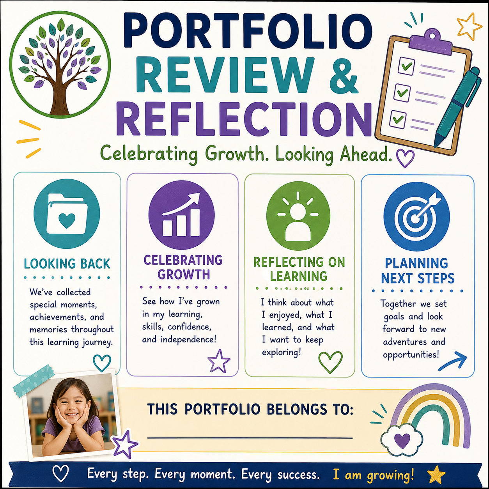

Work Samples
Collect drawings, writing attempts, artwork, mathematical thinking, construction plans, problem solving samples, and other classroom work that demonstrates children's learning and development.
Organize children's work samples, photographs, developmental evidence, learning stories, and family contributions into meaningful professional portfolios that tell the story of each child's learning and growth.
Portfolio documentation provides educators with a practical way to collect authentic evidence throughout the year while celebrating children's accomplishments, recognizing emerging skills, supporting intentional planning, and strengthening communication with families.
A child's portfolio is more than a collection of papers. It is a visual and developmental record that helps educators show how children learn, communicate, create, explore, solve problems, build relationships, and grow over time.
When educators intentionally collect meaningful work samples, photographs, observations, learning stories, developmental evidence, and family contributions, portfolios become a powerful tool for understanding the whole child and communicating progress with families.

Strong portfolios bring together multiple forms of authentic evidence so educators and families can see the child as a whole learner.
Collect drawings, writing attempts, artwork, mathematical thinking, construction plans, problem solving samples, and other classroom work that demonstrates children's learning and development.
Use photographs to capture meaningful moments of exploration, collaboration, creative expression, investigation, movement, routines, and learning experiences that may not be visible in a traditional work sample.
Include anecdotal records, running records, learning stories, language samples, and other objective observations that provide context for children's learning experiences.
Connect portfolio entries to developmental milestones, emerging skills, progress monitoring information, and observations across the major developmental domains.
Invite families to contribute photographs, stories, observations, interests, accomplishments, cultural experiences, and meaningful information about children's learning outside the classroom.
Include children's words, explanations, reflections, choices, questions, and descriptions of their own work whenever possible to help make portfolios meaningful and child centered.
Use these classroom ready resources to organize children's learning evidence, document meaningful experiences, and build professional child portfolios throughout the year.

Create a professional beginning page for each child's portfolio with space for the child's name, classroom information, school year, photograph, interests, and important portfolio information.
Download Template →
Document children's classroom work while recording the date, learning experience, child's words, observed skills, developmental connections, and teacher reflection.
Download Template →
Capture meaningful classroom experiences through photographs while documenting what the child was doing, learning, communicating, exploring, or discovering.
Download Template →
Tell the story behind children's learning through narrative observations, photographs, child quotes, teacher reflection, and opportunities for future learning.
Download Template →
Organize developmental observations and evidence across domains while identifying strengths, emerging skills, milestones, and areas for continued support.
Download Template →
Invite families to share photographs, stories, accomplishments, interests, cultural experiences, and meaningful learning experiences from home.
Download Template →
Provide space for children to talk about their work, explain their thinking, share what they enjoyed, and reflect on experiences documented in their portfolio.
Download Template →
Review collected evidence to identify developmental growth, recurring interests, emerging skills, strengths, and opportunities for intentional teaching.
Download Template →A meaningful portfolio should represent the child's learning journey rather than simply becoming a collection of completed worksheets.
Collect evidence consistently rather than waiting until conference time or the end of the school year. Ongoing documentation creates a clearer picture of developmental progress.
Select work samples and observations that demonstrate learning, growth, interests, problem solving, communication, creativity, relationships, and emerging skills.
Include dates, brief descriptions, child quotes, teacher observations, and learning connections so families and educators understand what the evidence represents.
Whenever possible, include examples from different points in time so developmental changes and increasing levels of independence become visible.
Create opportunities for families to contribute their perspectives, photographs, stories, interests, accomplishments, and observations from home.
Include evidence that reflects social emotional development, language, cognition, physical development, creativity, literacy, mathematics, relationships, and individual interests.

Children demonstrate learning throughout the entire classroom day. A block structure, painting, conversation, dramatic play experience, science investigation, book discussion, or outdoor discovery can become meaningful portfolio evidence when the educator documents what the child did, said, discovered, and demonstrated.
The strongest portfolio documentation connects the child's experience with observable learning while preserving the child's voice and individuality. Teachers can then use the evidence to reflect on development, plan future learning experiences, and communicate meaningful progress with families.
Core Evidence Types
Portfolio Resources
Key Documentation Areas
Classroom Ready
Organize children's learning evidence with a complete collection of portfolio pages designed to simplify documentation, preserve meaningful experiences, and support family communication.
Keep children's work samples, photographs, observations, developmental evidence, and family contributions organized in one professional portfolio system.
Use photographs and visual evidence to capture classroom experiences that demonstrate children's exploration, engagement, relationships, and learning.
Combine observations, child quotes, work samples, learning stories, and developmental information to create a meaningful picture of each child's progress.
Use professional printable PDF resources together with editable Microsoft Word versions when available so educators can customize documentation for classroom needs.
Continue building your professional assessment library with resources that support observation, developmental documentation, family partnerships, intentional planning, and authentic assessment.
Browse anecdotal records, running records, ABC observations, learning stories, daily observation sheets, time sampling, event sampling, and other classroom documentation tools.
ExploreTrack developmental milestones and progress across age groups while supporting authentic assessment and intentional teaching.
ExploreStrengthen family partnerships with conference forms, communication logs, developmental summaries, and family planning resources.
ExploreExplore the complete Observation & Assessment Toolkit with printable forms and editable Microsoft Word resources for classroom documentation.
Explore